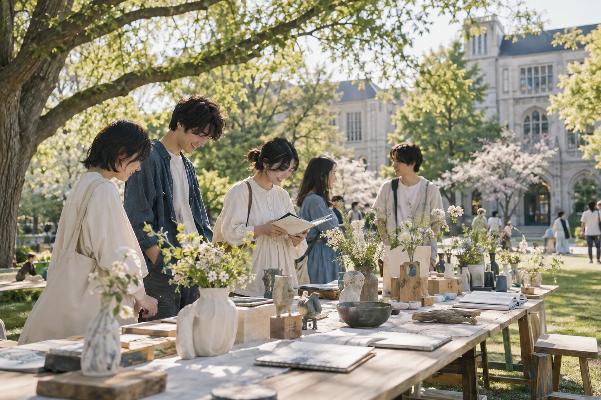

새로운 영감을 만나세요.
PROGRAM느긋하게,
느긋하게,
좋아하는 것부터.
작품 산책
학생들의 작은 실험과 새로운 시선.
같이 만드는 시간
손으로 만들며 나누는 디자인 이야기.
잔디 위의 대화
궁금했던 학교생활, 편하게 물어보세요.
가볍게 오세요.
모루대학교 디자인관 앞 잔디마당
관심 있는 누구나 · 무료 입장
가상의 행사입니다. 신청이나 개인정보 입력은 받지 않아요.
처음으로 ↑
학생들의 작은 실험과 새로운 시선.
손으로 만들며 나누는 디자인 이야기.
궁금했던 학교생활, 편하게 물어보세요.
모루대학교 디자인관 앞 잔디마당
관심 있는 누구나 · 무료 입장
가상의 행사입니다. 신청이나 개인정보 입력은 받지 않아요.
처음으로 ↑